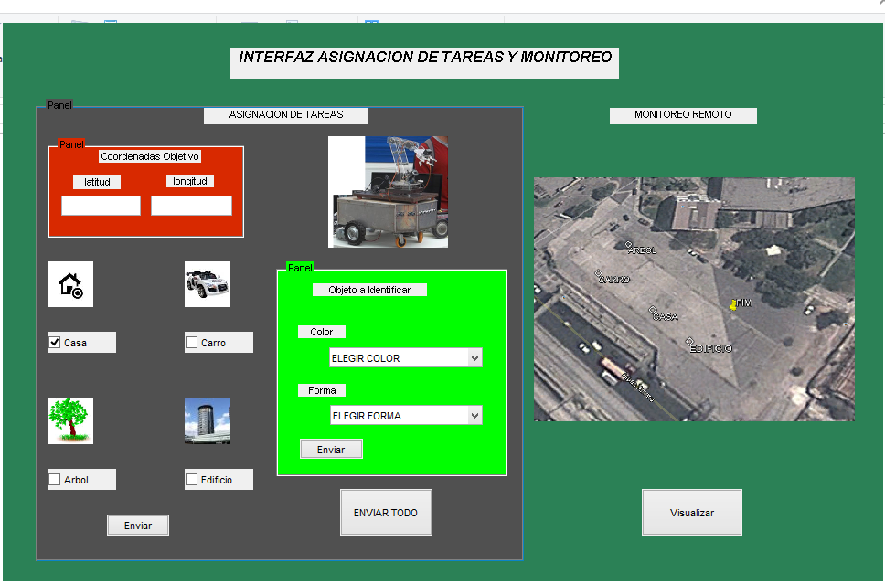

Contents
function varargout = gui_tareas_dark_logic(varargin) % GUI_TAREAS_DARK_LOGIC M-file for gui_tareas_dark_logic.fig % GUI_TAREAS_DARK_LOGIC, by itself, creates a new GUI_TAREAS_DARK_LOGIC or raises the existing % singleton*. % % H = GUI_TAREAS_DARK_LOGIC returns the handle to a new GUI_TAREAS_DARK_LOGIC or the handle to % the existing singleton*. % % GUI_TAREAS_DARK_LOGIC('CALLBACK',hObject,eventData,handles,...) calls the local % function named CALLBACK in GUI_TAREAS_DARK_LOGIC.M with the given input arguments. % % GUI_TAREAS_DARK_LOGIC('Property','Value',...) creates a new GUI_TAREAS_DARK_LOGIC or raises the % existing singleton*. Starting from the left, property value pairs are % applied to the GUI before gui_tareas_dark_logic_OpeningFcn gets called. An % unrecognized property name or invalid value makes property application % stop. All inputs are passed to gui_tareas_dark_logic_OpeningFcn via varargin. % % *See GUI Options on GUIDE's Tools menu. Choose "GUI allows only one % instance to run (singleton)". % % See also: GUIDE, GUIDATA, GUIHANDLES % Edit the above text to modify the response to help gui_tareas_dark_logic % Last Modified by GUIDE v2.5 27-Nov-2013 16:37:34 % Begin initialization code - DO NOT EDIT gui_Singleton = 1; gui_State = struct('gui_Name', mfilename, ... 'gui_Singleton', gui_Singleton, ... 'gui_OpeningFcn', @gui_tareas_dark_logic_OpeningFcn, ... 'gui_OutputFcn', @gui_tareas_dark_logic_OutputFcn, ... 'gui_LayoutFcn', [] , ... 'gui_Callback', []); if nargin && ischar(varargin{1}) gui_State.gui_Callback = str2func(varargin{1}); end if nargout [varargout{1:nargout}] = gui_mainfcn(gui_State, varargin{:}); else gui_mainfcn(gui_State, varargin{:}); end % End initialization code - DO NOT EDIT % --- Executes just before gui_tareas_dark_logic is made visible. function gui_tareas_dark_logic_OpeningFcn(hObject, eventdata, handles, varargin) % This function has no output args, see OutputFcn. % hObject handle to figure % eventdata reserved - to be defined in a future version of MATLAB % handles structure with handles and user data (see GUIDATA) % varargin command line arguments to gui_tareas_dark_logic (see VARARGIN) background = imread('agricultor.png'); %Leer imagen axes(handles.dark_logic); %Carga la imagen en background imshow(background); background = imread('casa.jpg'); %Leer imagen axes(handles.axes3); imshow(background);%Carga la imagen en background background = imread('carro.jpg'); %Leer imagen axes(handles.axes4); %Carga la imagen en background imshow(background); background = imread('arbol.jpg'); %Leer imagen axes(handles.axes5); %Carga la imagen en background imshow(background); background = imread('edificio.jpg'); %Leer imagen axes(handles.axes6); %Carga la imagen en background imshow(background); background = imread('mapa.jpg'); %Leer imagen axes(handles.axes7); %Carga la imagen en background axis off; imshow(background); % Choose default command line output for gui_tareas_dark_logic handles.output = hObject; % Update handles structure guidata(hObject, handles); % UIWAIT makes gui_tareas_dark_logic wait for user response (see UIRESUME) % uiwait(handles.figure1); % --- Outputs from this function are returned to the command line. function varargout = gui_tareas_dark_logic_OutputFcn(hObject, eventdata, handles) % varargout cell array for returning output args (see VARARGOUT); % hObject handle to figure % eventdata reserved - to be defined in a future version of MATLAB % handles structure with handles and user data (see GUIDATA) % Get default command line output from handles structure varargout{1} = handles.output; % --- Executes on button press in pushbutton1. function pushbutton1_Callback(hObject, eventdata, handles) % hObject handle to pushbutton1 (see GCBO) % eventdata reserved - to be defined in a future version of MATLAB % handles structure with handles and user data (see GUIDATA) % --- Executes on button press in pushbutton2. function pushbutton2_Callback(hObject, eventdata, handles) fun =get(handles.color,'Value')-1 %close all;clear all;clc; imaqreset % primero se captura un stream de video usando videoinput, con argumento %de winvideo, numero de dispositivo y formato de la camara, si no sabes usa la %funcion imaqtool para averiguarlo es YUY o RGB vid=videoinput('winvideo',1,'YUY2_640x480'); %640x480 160x120 % Se configura las opciones de adquision de video set(vid, 'FramesPerTrigger', Inf); set(vid, 'ReturnedColorspace', 'rgb') vid.FrameGrabInterval = 5; %framegrabinterval significa que tomara cada 5 frame del stream de video adquirida %con start(vid) se activa la adquisicion, pero todavia se toma la primera foto start(vid) % creamos un bucle que puede ser while always o while true en este caso %y como mi compu es una netbook trucha(trucha=cagada=lenta=barata) %hago que despues de 100 frames adquiridos se salga del bucle para evitar colgadas while(vid.FramesAcquired<=1000) % se toma una snapshot del stream y se la almacena en data para trabajar mas %facil data = getsnapshot(vid); % ahora vamos a reconocer el color rojo en tiempo real % tenemos que extraer el color rojo % de la imagen en escala de grises de la imagen adquirida en data diff_im = imsubtract(data(:,:,get(handles.color,'Value')-1), rgb2gray(data)); %imsubstract sirve para sacar algun valor constante de una imagen, usamos como %argumento el array de data y la funcion rgb2gray de data %se usa medfilt2 para filtrar la senial del ruido diff_im = medfilt2(diff_im, [3 3]); % Convertir la imagen en escala de grises a una imagen binaria. diff_im = im2bw(diff_im,0.06); % para determinar el tamanio a reconocer se usa bwareopen para descartar %imagen de rojo de menos de 300 pixels diff_im = bwareaopen(diff_im,50); % Etiquetamos los elementos conectados en la imagen bw = bwlabel(diff_im, 8); % Ahora hacemos el analisis del "objeto" detectado(que solo son pixels rojos) %agrupados de mas de 300 % onfiguramos la region etiquetada stats = regionprops(bw, 'BoundingBox', 'Centroid', 'Area', 'Perimeter'); % mostramos la imagen imshow(data) hold on %este es un bucle para encerrar el objeto rojo en un rectangulp y una cruz en el %centroide(solo es programacion basica de matlab) for object = 1:length(stats) A=stats(object).Area; P=stats(object).Perimeter; K=P^2/A forma=get(handles.forma,'Value'); if(forma==2) if(15>K && K>13) bb = stats(object).BoundingBox; bc = stats(object).Centroid; rectangle('Position',bb,'EdgeColor','r','LineWidth',2) plot(bc(1),bc(2), '-m+') a=text(bc(1)+15,bc(2), strcat('X: ', num2str(round(bc(1))), ' Y: ', num2str(round(bc(2))))); set(a, 'FontName', 'Arial', 'FontWeight', 'bold', 'FontSize', 12, 'Color', 'yellow'); end end if(forma==3) if(25>K && K>22) bb = stats(object).BoundingBox; bc = stats(object).Centroid; rectangle('Position',bb,'EdgeColor','r','LineWidth',2) plot(bc(1),bc(2), '-m+') a=text(bc(1)+15,bc(2), strcat('X: ', num2str(round(bc(1))), ' Y: ', num2str(round(bc(2))))); set(a, 'FontName', 'Arial', 'FontWeight', 'bold', 'FontSize', 12, 'Color', 'yellow'); end end if(forma==4) if(21>K && K>15) bb = stats(object).BoundingBox; bc = stats(object).Centroid; rectangle('Position',bb,'EdgeColor','r','LineWidth',2) plot(bc(1),bc(2), '-m+') a=text(bc(1)+15,bc(2), strcat('X: ', num2str(round(bc(1))), ' Y: ', num2str(round(bc(2))))); set(a, 'FontName', 'Arial', 'FontWeight', 'bold', 'FontSize', 12, 'Color', 'yellow'); end end % if(4*pi*(stats(object).Area)/(stats(object).Perimeter)^2 > 0.75) % (stats(object).Perimeter)^2/stats(object).Area % bb = stats(object).BoundingBox; % bc = stats(object).Centroid; % rectangle('Position',bb,'EdgeColor','r','LineWidth',2) % plot(bc(1),bc(2), '-m+') % a=text(bc(1)+15,bc(2), strcat('X: ', num2str(round(bc(1))), ' Y: ', num2str(round(bc(2))))); % set(a, 'FontName', 'Arial', 'FontWeight', 'bold', 'FontSize', 12, 'Color', 'yellow'); % end end hold off end % aqui terminan los 2 bucles % detenemos la captura stop(vid); %FLUSHDATA remueve la imagen del motor de adquisicion y la almacena en el buffer flushdata(vid); % borramos todo(como en cualquier programa) clear all %%%%%%%%%%%%%%%%%%%%%%%%%%%%%%%%%%%%%%%%%%%%%%%%%%%%%%%%%%%%%%%%%%%% % hObject handle to pushbutton2 (see GCBO) % eventdata reserved - to be defined in a future version of MATLAB % handles structure with handles and user data (see GUIDATA) % --- Executes on selection change in color. function color_Callback(hObject, eventdata, handles) % hObject handle to color (see GCBO) % eventdata reserved - to be defined in a future version of MATLAB % handles structure with handles and user data (see GUIDATA) % Hints: contents = cellstr(get(hObject,'String')) returns color contents as cell array % contents{get(hObject,'Value')} returns selected item from color % --- Executes during object creation, after setting all properties. function color_CreateFcn(hObject, eventdata, handles) % hObject handle to color (see GCBO) % eventdata reserved - to be defined in a future version of MATLAB % handles empty - handles not created until after all CreateFcns called % Hint: popupmenu controls usually have a white background on Windows. % See ISPC and COMPUTER. if ispc && isequal(get(hObject,'BackgroundColor'), get(0,'defaultUicontrolBackgroundColor')) set(hObject,'BackgroundColor','white'); end function latitud_Callback(hObject, eventdata, handles) % hObject handle to latitud (see GCBO) % eventdata reserved - to be defined in a future version of MATLAB % handles structure with handles and user data (see GUIDATA) % Hints: get(hObject,'String') returns contents of latitud as text % str2double(get(hObject,'String')) returns contents of latitud as a double % --- Executes during object creation, after setting all properties. function latitud_CreateFcn(hObject, eventdata, handles) % hObject handle to latitud (see GCBO) % eventdata reserved - to be defined in a future version of MATLAB % handles empty - handles not created until after all CreateFcns called % Hint: edit controls usually have a white background on Windows. % See ISPC and COMPUTER. if ispc && isequal(get(hObject,'BackgroundColor'), get(0,'defaultUicontrolBackgroundColor')) set(hObject,'BackgroundColor','white'); end function longitud_Callback(hObject, eventdata, handles) % hObject handle to longitud (see GCBO) % eventdata reserved - to be defined in a future version of MATLAB % handles structure with handles and user data (see GUIDATA) % Hints: get(hObject,'String') returns contents of longitud as text % str2double(get(hObject,'String')) returns contents of longitud as a double % --- Executes during object creation, after setting all properties. function longitud_CreateFcn(hObject, eventdata, handles) % hObject handle to longitud (see GCBO) % eventdata reserved - to be defined in a future version of MATLAB % handles empty - handles not created until after all CreateFcns called % Hint: edit controls usually have a white background on Windows. % See ISPC and COMPUTER. if ispc && isequal(get(hObject,'BackgroundColor'), get(0,'defaultUicontrolBackgroundColor')) set(hObject,'BackgroundColor','white'); end % --- Executes on selection change in forma. function forma_Callback(hObject, eventdata, handles) % hObject handle to forma (see GCBO) % eventdata reserved - to be defined in a future version of MATLAB % handles structure with handles and user data (see GUIDATA) % Hints: contents = cellstr(get(hObject,'String')) returns forma contents as cell array % contents{get(hObject,'Value')} returns selected item from forma % --- Executes during object creation, after setting all properties. function forma_CreateFcn(hObject, eventdata, handles) % hObject handle to forma (see GCBO) % eventdata reserved - to be defined in a future version of MATLAB % handles empty - handles not created until after all CreateFcns called % Hint: popupmenu controls usually have a white background on Windows. % See ISPC and COMPUTER. if ispc && isequal(get(hObject,'BackgroundColor'), get(0,'defaultUicontrolBackgroundColor')) set(hObject,'BackgroundColor','white'); end % --- Executes on button press in pushbutton3. function pushbutton3_Callback(hObject, eventdata, handles) %%%%%%%%%%%%%%%%%%%%%%%%%%%%%%%% %close all;clear all;clc; delete(instrfind({'Port'},{'COM15'})); %ajustar puerto serie s = serial('COM15','BaudRate',9600,'Terminator','CR/LF'); fopen(s); % N1 =91.220953*100;%latitud % N2=62.929139*100;%longitud %----Coordenadas de entrada--------------------------------------------- cas=get(handles.casa,'Value'); car=get(handles.carro,'Value'); arb=get(handles.arbol,'Value'); edi=get(handles.edificio,'Value'); if(cas+car+arb+edi >1) errordlg('No seleccionar mas de un lugar','Error'); elseif cas==1 N1=12.024777*100 N2=77.047638*100 elseif car==1 N1=12.024611*100 N2=77.047844*100 elseif arb==1 N1=12.024483*100 N2=77.047747*100 elseif edi==1 N1=12.024905*100 N2=77.047511*100 else N1=-eval(get(handles.latitud,'string'))*100 N2=-eval(get(handles.longitud,'string'))*100 end %----Imagen de entrada--------------------------------------------- fun1 =get(handles.color,'Value')-1 fun2 =get(handles.forma,'Value')-1 if(fun1==0 || fun2==0) vision=0; end if(fun1==1 && fun2==1) vision=1 ; end if(fun1==1 && fun2==2) vision=2; end if(fun1==1 && fun2==3) vision=3 ; end if(fun1==2 && fun2==1) vision=4 ; end if(fun1==2 && fun2==2) vision=5 ; end if(fun1==2 && fun2==3) vision=6 ; end if(fun1==3 && fun2==1) vision=7 ; end if(fun1==3 && fun2==2) vision=8 ; end if(fun1==3 && fun2==3) vision=9 ; end imagen=vision;%de los 9 casos basicos a1=fix(N1/100) b1=fix(N1-a1*100) c1=fix(N1*100-(a1*10000+b1*100)) d1=fix(N1*10000-(a1*1000000+b1*10000+c1*100)) a2=fix(N2/100) b2=fix(N2-a2*100) c2=fix(N2*100-(a2*10000+b2*100)) d2=N2*10000-(a2*1000000+b2*10000+c2*100) i=0; while(i<15) i=i+1 fwrite(s,'S','char'); fwrite(s,a1,'uint8'); fwrite(s,b1,'uint8'); fwrite(s,c1,'uint8'); fwrite(s,d1,'uint8'); fwrite(s,a2,'uint8'); fwrite(s,b2,'uint8'); fwrite(s,c2,'uint8'); fwrite(s,d2,'uint8'); fwrite(s,imagen,'uint8'); pause(0.04) a2 = fread(s,10); if a2(1)=='S' d11=a2(2); d1_arduino=d11 d22=a2(3); d2_arduino=d22 d33=a2(4); d3_arduino=d33 d44=a2(5); d4_arduino=d44 d55=a2(6); d5_arduino=d55 d66=a2(7); d6_arduino=d66 d77=a2(8); d7_arduino=d77 d88=a2(9); d8_arduino=d88 d99=a2(10); d9_arduino=d99 if a2(2)~=0 break; end end %pause(); end delete(instrfind({'Port'},{'COM15'})); %ajustar puerto serie % hObject handle to pushbutton3 (see GCBO) % eventdata reserved - to be defined in a future version of MATLAB % handles structure with handles and user data (see GUIDATA) % --- Executes during object creation, after setting all properties. function robot_CreateFcn(hObject, eventdata, handles) % hObject handle to robot (see GCBO) % eventdata reserved - to be defined in a future version of MATLAB % handles empty - handles not created until after all CreateFcns called % --- Executes on button press in casa. function casa_Callback(hObject, eventdata, handles) % hObject handle to casa (see GCBO) % eventdata reserved - to be defined in a future version of MATLAB % handles structure with handles and user data (see GUIDATA) % Hint: get(hObject,'Value') returns toggle state of casa % --- Executes on button press in carro. function carro_Callback(hObject, eventdata, handles) % hObject handle to carro (see GCBO) % eventdata reserved - to be defined in a future version of MATLAB % handles structure with handles and user data (see GUIDATA) % Hint: get(hObject,'Value') returns toggle state of carro % --- Executes on button press in arbol. function arbol_Callback(hObject, eventdata, handles) % hObject handle to arbol (see GCBO) % eventdata reserved - to be defined in a future version of MATLAB % handles structure with handles and user data (see GUIDATA) % Hint: get(hObject,'Value') returns toggle state of arbol % --- Executes on button press in edificio. function edificio_Callback(hObject, eventdata, handles) % hObject handle to edificio (see GCBO) % eventdata reserved - to be defined in a future version of MATLAB % handles structure with handles and user data (see GUIDATA) % Hint: get(hObject,'Value') returns toggle state of edificio % --- Executes on button press in monitoreo. function monitoreo_Callback(hObject, eventdata, handles)
delete(instrfind({'Port'},{'COM15'})); %ajustar puerto serie!
format long
%crear objeto serie
s = serial('COM15','BaudRate',9600,'Terminator','CR/LF');
warning('off','MATLAB:serial:fscanf:unsuccessfulRead');
%abrir puerto
fopen(s);
% parámetros de medidas
tmax = 100; % tiempo de captura en s
rate = 33; % resultado experimental (comprobar)
t=0;
tic
description = sprintf('%s<br>%s</br><br>%s</br>', ...
'3 Apple Hill Drive', 'Natick, MA. 01760', ...
'http://www.notasutilesenperu.blogspot.com');
iconDir = fullfile(matlabroot,'toolbox','matlab','icons');
iconFilename = fullfile(iconDir, 'robot1.gif');
name = 'R';
% winopen(filename)
%pause(5)
while(1)
% t = toc;
kmlFolder = tempdir;
a2 = fread(s,9);
if a2(1)=='A'
%partes de la latitud
a=a2(2);
b=a2(3);
c=a2(4);
d=a2(5);
%partes de la longitud
e=a2(6)
f=a2(7)
g=a2(8)
h=a2(9)
lat=-integracion_gps(a,b,c,d)
lon=-integracion_gps(e,f,g,h)
if lat~=0
filename = fullfile(kmlFolder, 'Autonomo.kml');
kmlwrite(filename, lat, lon ,...
'Description', description, ...
'Name', name, ...
'Icon', iconFilename ,'IconScale', 0.5);
winopen(filename)
end
end
%input('');
pause(0.08)
end
% resultado del cronometro
fprintf('%g s de captura a %g cap/s \n',t,i/t);
Limpiar la escena del crimen
fclose(s); delete(s); clear s; delete(instrfind({'Port'},{'COM15'})); %ajustar puerto serie!